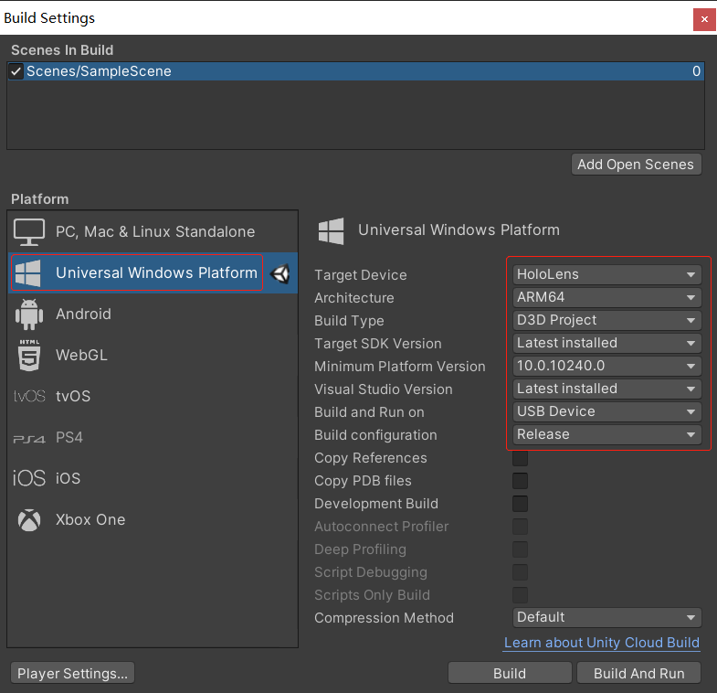
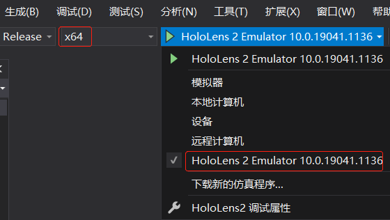

微软混合现实眼镜(HoloLens)
作者：追风剑情 发布于：2021-3-22 17:31 分类：Unity3d
HoloLens官网
Microsoft HoloLens
重启、重置或恢复 HoloLens 2
HoloLens官方开发文档
官方混合现实开发文档
针对 HoloLens 的 Unity 开发
Unity HoloLens 开发调试及部署配置
Unity+MRTK+HoloLens2开发环境配置与部署
HoloLens开发工具安装清单
[微软] MRTK 教程
[微软] MRTK 文档
[GitHub] MRTK API 文档
[微软] MRTK API 文档
[微软] Dynamics 365 Guides 概述
[微软] 输入系统概述(Input Overview)
HoloviewLab
基于HoloLens 2的混合现实通讯技术
[百度网盘] HoloLens 2 开发工具清单:
MixedRealityFeatureTool-1.0.2103.3-Beta.zip (提取码：n9mc)
Microsoft.MixedReality.Toolkit.Unity.Foundation.2.6.1.unitypackage (提取码：o3k9)
Microsoft.MixedReality.Toolkit.Unity.Extensions.2.6.1.unitypackage (提取码：wy1a)
Microsoft.MixedReality.Toolkit.Unity.Examples.2.6.1.unitypackage (提取码：hnfb)
Microsoft.MixedReality.Toolkit.Unity.Tools.2.6.1.unitypackage (提取码：f0hp)
Microsoft.MixedReality.Toolkit.Unity.TestUtilities.2.6.1.unitypackage (提取码：uoh9)
MRTK.HoloLens2.Unity.Tutorials.Assets.GettingStarted.2.4.0.unitypackage (提取码：fdb6)
MRTK源码: MixedRealityToolkit-Unity-2.6.1.zip (提取码：hx4g)
HoloLensEmulatorSetup.exe (提取码：9bgw)
windowsdesktop-runtime-5.0.4-win-x64.exe (提取码：lmg4)
[官网下载] Windows 10 SDK
一、开发环境配置
1、Windows中设置开发人员模式 (设置->更新和安全->针对开发人员->开发人员模式)

2、安装Visual Studio必要组件（需要Visual Studio 2019 16.2或更高版本）
● 使用C++的桌面开发
● 通用Windows平台开发
● USB设备连接性
● Windows 10 SDK
3、Windows 10 SDK 版本
官网下载 Windows 10 SDK
要生成 HoloLens 2 应用，必须安装 Windows SDK 内部版本 18362 或更高版本。
D:\Windows Kits\10\SDKManifest.xml
4、下载 Microsoft Mixed Reality Toolkit
[百度网盘下载] 源码 (提取码：dpvl)
[百度网盘下载] MixedRealityToolkit.unitypackage (提取码：9pwu)
[GitHub下载] 源码
[GitHub下载] Microsoft Mixed Reality Toolkit
将下载的MixedRealityToolkit.unitypackage直接导入到新工程中使用
用于 Unity 的 MRTK 简介
MRTK 教程简介
GitHub MRTK 文档
MRTK 安装指南
Mixed Reality Feature Tool
也可以通过Microsoft提供的Mixed Reality Feature Tool导入MRTK到Unity工程。
欢迎使用混合现实功能工具
[官方下载] Mixed Reality Feature Tool
[百度网盘下载] Mixed Reality Feature Tool (提取码：umna)
Download .NET 5.0 Runtime
需要 Windows 10 并安装 .NET 5.0 运行时，才能运行混合现实功能工具
选择Unity项目工程路径
点击“详情(Details)”可查看需要的Unity版本和依赖项
点击“验证”按钮
点击“批准”按钮
导入完毕后打开Unity工程进行配置
先交换到 Universal Windows Platform 平台，再配置 Configure Unity Project
5、Unity设置
● 交换到Universal Windows Platform (UWP)平台
Minimum Platform Version: MRTK 2.6.x 建议选 10.0.18362.0

● 安装 XR插件管理(XR Plugin Management) (新版 XR 设置)
坑：如果使用新版XR应用无法正常工作，请使用旧版XR，Unity2019.4.x 建议使用旧版XR
● 在XR Settings中勾选上Virtual Reality SDKs （旧版 XR 设置）
坑：如果勾上 WSA Holographic Remoting Supported ，程序启动时会报错，如图: (Unity 2019.4.19测试)
Exception.cpp
Unity中的单通道实例化渲染(Single Pass Instanced)使针对每只眼睛的绘制调用缩减为一个实例化绘制调用。 由于两个绘制调用之间的缓存内聚性，GPU 的性能也能得到一定的改善。
Single-Pass Stereo Rendering for HoloLens
建议在“XR Settings”下启用“深度缓冲区共享(Enable Depth Buffer Sharing)”，以优化全息影像稳定性。 但是，在使用此设置的情况下启用基于深度的后期阶段重新投影时，建议选择“16 位深度格式”而不是“24 位深度格式” 。 16 位深度缓冲区可以大幅减少与深度缓冲区流量相关的带宽（以及电量消耗）。 这可能会给节能和性能提升带来很大的好处。 但是，使用 16 位深度格式 可能会造成两种负面影响。
Z 冲突
与 24 位相比，16 位的更低深度范围保真度更容易发生 Z 冲突。 若要避免这种假象，请修改 Unity 相机的近距/远距剪裁平面，以采用更低的精度。 对于基于 HoloLens 的应用程序，50 米（而不是 Unity 的默认 1000 米）的远距剪裁平面通常可以消除任何 Z 冲突。
已禁用模具缓冲区
当 Unity 创建 16 位深度的渲染纹理时，不会创建模具缓冲区。 选择 24 位深度格式后，每个 Unity 文档将创建一个 24 位 Z 缓冲区和一个 [8 位模具缓冲区] (https://docs.unity3d.com/Manual/SL-Stencil.html) （如果 32 位在设备上适用，通常在 HoloLens 等设备上适用）。
● 质量设置勾选 Very Low
Project Settings->Quality
● 设置音频空间定位器(MS HRTF Spatializer)
可提高项目中的音频体验。
● 配置 Capabilities 和 Supported Device Families
(必选) InternetClient、Microphone、SpatialPerception、GazeInput
“产品名称”是在 HoloLens“开始”菜单中显示的名称。 要更轻松地在开发期间查找应用，请在名称前面添加一个下划线，以将其排在顶部。
MRTK 的 UI 元素需要 TextMeshPro 基本资源。( Window->TextMeshPro->Import TMP Essential Resources )
6、安装 Hyper-V (HoloLens仿真器需要用到)
使用 HoloLens 仿真器
下载 HoloLens 仿真器
Win+Q 搜索Hyper，选择 启用或关闭Windows功能
查看当前Windows版本: 运行->输入winver->回车
HoloLens 仿真器系统要求
● HoloLens 2 仿真器需要 Windows 10 2018 年 10 月更新版或更高版本
● 64 位 CPU
● 4 核 CPU（或总共有 4 个核心的多个 CPU）
● 8 GB 或更大的 RAM
● 在 BIOS 中，必须支持且启用以下功能：
○ 硬件协助的虚拟化
○ 二级地址转换 (SLAT)
○ 基于硬件的数据执行保护 (DEP)
● GPU 要求:
○ DirectX 11.0 或更高版本
○ WDDM 1.2 图形驱动程序或更高版本（第 1 代）
○ WDDM 2.5 图形驱动程序（HoloLens 2 仿真器）
○ 仿真器可与不受支持的 GPU 配合工作，但速度会变慢
针对 Unity 的性能建议
1、避免使用开销大的API
● GameObject.BroadcastMessage()
● UnityEngine.Object.Find()
● UnityEngine.Object.FindWithTag()
● UnityEngine.Object.FindObjectOfType()
● UnityEngine.Object.FindObjectsOfType()
● UnityEngine.Object.FindGameObjectsWithTag()
● UnityEngine.Object.FindGameObjectsWithTag()
● Component GetComponent(string)
● Camera.main (相当于调用 FindGameObjectsWithTag())
● 删除空回调函数 (例如 void Update(){})
● 避免使用 LINQ
2、取消开销大的处理选项
● 取消实时全局照明(Window->Rendering->Lighting Settings->Realtime Global Illumination)
● 禁用所有阴影投射
● 为“UWP 平台”选择“低质量”
● 碰撞体开销: 球体 < 胶囊 < 箱体 < 网格（凸）< 网格（非凸）
● 注意：在 HoloLens 开发中将对象标记为 Static 会造成问题。
● 使用混合现实工具包中的 MRTK Standard Shader
● 着色器预加载(Project Settings->Graphics->Always Included Shaders)
3、内存优化
● 在运行时使用 StringBuilder C# 类动态生成复杂字符串
● 删除不再需要的 Debug.Log() 调用
● 在适当的时候调用 System.GC.Collect()
● 使用对象池技术
4、加载场景
请记住，在加载启动场景时，会向用户显示全息初始屏幕。
要得到稳定的体验，需要维持 60 FPS
全息影像与用户之间的最佳距离
建议：摄像机的近裁剪面设成0.85，远裁剪面设成5
Clear Flags: Solid Color
Background: RGBA(0, 0, 0, 0)
二、初始化项目并部署第一个应用程序
1、新建场景并向场景添加 MixedRealityToolkit 对象
选择 DefaultHoloLens2ConfigurationProfile
(可选) 添加 Tracked Pose Driver 组件
2、Build项目 (Build Settings->Build)
3、生成并部署应用程序
如果Visual Studio提示要安装额外组件，一定要点【确定】安装。
将 Universal Windows 工程设为启动项

选择“Master”配置或“Release”配置、ARM64 体系结构和“设备”作为目标，配置 Visual Studio for HoloLens
注意：使用USB安装请选择“设备”，使用WiFi安装请选择“远程计算机”。
将 HoloLens 连接到计算机，然后选择“调试” > “启动但不调试”，以生成并部署到你的设备 ：
选择 "调试">"开始调试"
选择 "调试">“开始执行(不调试)” 会自动启动设备上的应用，而不会连接 Visual Studio 调试器。
选择 “生成”>“部署解决方案”，在不自动启动应用的情况下将内容部署到设备。
| 生成和部署 Unity Visual Studio 解决方案 | |
| 配置 | 说明 |
| Debug | 禁用所有优化，并启用探查器。 用于调试脚本。 |
|
Master |
启用所有优化并禁用探查器。 用于将应用提交到应用商店。 |
| MasterWithLTCG | 暂不清楚。 |
| Release |
启用所有优化，并启用探查器。 用于评估应用程序性能。 |
在生成到设备之前，设备必须处于开发人员模式并与开发计算机配对。 这两个步骤都可以按照这些说明来完成。参见
使用 Visual Studio 进行部署和调试
在 Visual Studio 中打包桌面或 UWP 应用
配对设备
首次将应用从 Visual Studio 部署到 HoloLens 时，系统会提示输入 PIN。 在 HoloLens 上启动“设置”应用，转到“更新”>“面向开发人员”并点击“配对”，以生成 PIN。 当 PIN 显示在 HoloLens 上时，请将其键入 Visual Studio。 配对完成后，在 HoloLens 上点击“完成”关闭对话框。 此电脑现已与 HoloLens 配对，你可以自动部署应用。 请针对用于将应用部署到 HoloLens 的每台电脑重复上述步骤。
将 HoloLens 与所有配对的计算机取消配对：
● 启动“设置”应用，转到“更新”>“面向开发人员”，并点击“清除” 。
将 HoloLens 中显示的配对 PIN 码输入到 Visual Studio，完成设备配对:
在应用中，你可能会注意到诊断探查器，可以使用语音命令“切换诊断”来切换其可见性。 我们建议你在开发过程中使探查器在大部分时间都可见，以便了解何时更改应用可能会影响性能。 例如，HoloLens 应用应以 60 Fps 连续运行。
了解混合现实的性能
祝贺
现在，你已经部署了第一个 HoloLens 2 应用。 四处浏览一下，应该会看到空间映射网格覆盖了 HoloLens 感知到的所有表面。 此外，你应该在你的手和手指上看到用于手部跟踪的指示器，以及用于监视应用性能的帧速率计数器。 这些只是 MRTK 附带的几个基础功能。 在接下来的教程中，我们将向场景添加内容，以探索 HoloLens 和 MRTK 的各种功能。
三、安装与部署
☕ 通过 USB 部署
在 HoloLens 中启用 "开发者模式" 和 "设备门户"
"设置" > "更新与安全" > "开发者选项"
编译时如果遇到以下问题:
MSB377 打不到 SDK"WindowsMobile, Version=10.0.19041.0"。
原因: 这是因为没安装 Windows 10 SDK，或者 Windows 10 SDK 没安装到C盘导致的。
解决方案一：
在项目中找到 .vcxproj 文件，注释或删除以下内容:
<ItemGroup>
<SDKReference Include="WindowsMobile, Version=10.0.19041.0" />
</ItemGroup>
解决方案二：如果是因为Windows SDK没安装到C盘导致的，可以创建一个目录连接。
mklink /j "C:\Program Files (x86)\Windows Kits\10" "D:\Windows Kits\10"
首次将应用从电脑部署到 HoloLens 时，系统会提示输入 PIN
在 HoloLens 的 “设置” > "更新与安全" > "开发者选项" > 点击 "配对" 按钮 (会显示一个配对密码, 将这个密码输入到 Visual Studio 的 PIN 输入对话框中)
注意：一定要在 HoloLens 中关闭 “蓝牙” 功能， 否则会连接不上目标设备(HoloLens)，安装时保持HoloLens为非待机状态，有时可能需要重启HoloLens或Visual Studio才能连接上目标设备。
☕ 通过 WiFi 部署
HoloLens 中查看IP （可在 “设置” > “网络和 Internet” > “高级选项” 下找到 HoloLens 的 IP 地址）
在 Visual Stduio 中设置 HoloLens 的 IP
“项目” > "属性" > "调试" > "计算机名"
设置好 HoloLens 的 IP 后就可以根据需要生成、安装、部署项目了。
注意：如果 Visual Studio 连不上 HoloLens，重启下HoloLens。
☕ 将应用部署到 HoloLens 仿真器
[官方下载] HoloLens 仿真器
使用 HoloLens 仿真器
平台要选择 x86 或 x64, 否则目标设备下拉列表中无法选择 HoloLens 2 Emulator 
仿真器在首次启动时，可能需要花费一分钟或更长的时间来完成引导。 建议在调试会话期间让仿真器保持打开状态，以便将应用程序快速部署到仿真器。
基本的仿真器输入
控制仿真器与控制许多常见的 3D 视频游戏相似。 可以通过输入选项来使用键盘、鼠标或 Xbox 控制器。 通过定向佩戴 HoloLens 的模拟用户执行的操作来控制仿真器。 你的操作可在环境中四处移动该模拟用户。 仿真器中运行的应用程序可以像在真实设备上一样做出响应。
HoloLens（第 1 代）上的光标可跟踪头部运动和旋转。 在 HoloLens 2 仿真器中，光标跟踪手部运动和方向。
● 前后左右走动 - 使用键盘上的 WASD 键，或 Xbox 控制器上的左摇杆。
● 上下左右注视 - 选择并拖动鼠标、使用键盘上的箭头键，或使用 Xbox 控制器上的右摇杆。
● 隔空敲击手势 - 单击鼠标右键、按键盘上的 Enter 键，或使用 Xbox 控制器上的 A 按钮。
● 开花手势/系统手势 - 按键盘上的 Windows 键或 F2 键，或按 Xbox 控制器上的 B 按钮。
● 滚动时的手部运动 - 按住 Alt 键和鼠标右键的同时向上或向下拖动鼠标。 在 Xbox 控制器中按住右扳机键和 A 按钮的同时向上和向下移动右摇杆。
● 手部运动和方向（仅适用于 HoloLens 2 仿真器）- 按住 Alt 键的同时向上、向下、向左或向右拖动鼠标以移动手部。 也可以使用箭头键和 Q 或 E 来旋转和倾斜手部。 在 Xbox 控制器中，请在按住左缓冲键或右缓冲键的同时，使用左拇指操纵杆向左、向右、向前和向后移动手部，使用右拇指操纵杆旋转手部。 使用 Dpad 上的向上或向下键来抬高或降低手部。
有 Windows Mixed Reality 沉浸式头戴显示设备？ 从 HoloLens 2 仿真器（Windows 全息版 2004）开始，可以使用 Windows Mixed Reality 沉浸式头戴显示设备和运动控制器来控制 HoloLens 2 仿真器，并以立体方式观看它。 请参阅将 Windows Mixed Reality 沉浸式头戴显示设备和运动控制器与 HoloLens 2 仿真器配合使用
四、HoloLens 投屏到电脑
需要在 HoloLens 上开启 设备门户(设置->更新和安全->开发者选项->设备门户)
第一次通过浏览器访问 HoloLens 会让你输入 PIN 和 账号/密码。
关闭接近光
接近光：当光标靠近组件时，会有照亮的视觉反馈。
关闭性能分析器
转载 https://blog.csdn.net/Devil_MayCare/article/details/107464895

实时捕获输入源数据
using UnityEngine;
using UnityEngine.XR.WSA.Input;
/// <summary>
/// 飞机跟随手
/// </summary>
public class AirplaneFollowHand : MonoBehaviour
{
void Start()
{
InteractionManager.InteractionSourceUpdated += OnInteractionSourceUpdated;
}
private void OnDestroy()
{
InteractionManager.InteractionSourceUpdated -= OnInteractionSourceUpdated;
}
private void OnInteractionSourceUpdated(InteractionSourceUpdatedEventArgs source)
{
//判断输入源
switch (source.state.source.kind)
{
case InteractionSourceKind.Hand:
Vector3 position;
//判断是哪只手
switch (source.state.source.handedness)
{
case InteractionSourceHandedness.Right:
//获取右手空间坐标
if (source.state.sourcePose.TryGetPosition(out position))
{
}
else
{
}
break;
case InteractionSourceHandedness.Left:
//获取左手空间坐标
if (source.state.sourcePose.TryGetPosition(out position))
{
}
else
{
}
break;
case InteractionSourceHandedness.Unknown:
break;
}
break;
case InteractionSourceKind.Controller:
break;
case InteractionSourceKind.Voice:
break;
case InteractionSourceKind.Other:
break;
}
}
}
标签: Unity3d
日历
最新文章
随机文章
热门文章
分类

存档
- 2022年2月(2)
- 2022年1月(8)
- 2021年12月(5)
- 2021年11月(3)
- 2021年10月(4)
- 2021年9月(9)
- 2021年8月(14)
- 2021年7月(8)
- 2021年6月(5)
- 2021年5月(2)
- 2021年4月(3)
- 2021年3月(7)
- 2021年2月(2)
- 2021年1月(8)
- 2020年12月(7)
- 2020年11月(2)
- 2020年10月(6)
- 2020年9月(9)
- 2020年8月(10)
- 2020年7月(9)
- 2020年6月(18)
- 2020年5月(4)
- 2020年4月(25)
- 2020年3月(38)
- 2020年1月(21)
- 2019年12月(13)
- 2019年11月(29)
- 2019年10月(44)
- 2019年9月(17)
- 2019年8月(18)
- 2019年7月(25)
- 2019年6月(25)
- 2019年5月(17)
- 2019年4月(10)
- 2019年3月(36)
- 2019年2月(35)
- 2019年1月(28)
- 2018年12月(30)
- 2018年11月(22)
- 2018年10月(4)
- 2018年9月(7)
- 2018年8月(13)
- 2018年7月(13)
- 2018年6月(6)
- 2018年5月(5)
- 2018年4月(13)
- 2018年3月(5)
- 2018年2月(3)
- 2018年1月(8)
- 2017年12月(35)
- 2017年11月(17)
- 2017年10月(16)
- 2017年9月(17)
- 2017年8月(20)
- 2017年7月(34)
- 2017年6月(17)
- 2017年5月(15)
- 2017年4月(32)
- 2017年3月(8)
- 2017年2月(2)
- 2017年1月(5)
- 2016年12月(14)
- 2016年11月(26)
- 2016年10月(12)
- 2016年9月(25)
- 2016年8月(32)
- 2016年7月(14)
- 2016年6月(21)
- 2016年5月(17)
- 2016年4月(13)
- 2016年3月(8)
- 2016年2月(8)
- 2016年1月(18)
- 2015年12月(13)
- 2015年11月(15)
- 2015年10月(12)
- 2015年9月(18)
- 2015年8月(21)
- 2015年7月(35)
- 2015年6月(13)
- 2015年5月(9)
- 2015年4月(4)
- 2015年3月(5)
- 2015年2月(4)
- 2015年1月(13)
- 2014年12月(7)
- 2014年11月(5)
- 2014年10月(4)
- 2014年9月(8)
- 2014年8月(16)
- 2014年7月(26)
- 2014年6月(22)
- 2014年5月(28)
- 2014年4月(15)
友情链接
- Unity官网
- Unity圣典
- Unity在线手册
- Unity中文手册(圣典)
- Unity官方中文论坛
- Unity游戏蛮牛用户文档
- Unity下载存档
- Unity引擎源码下载
- Unity服务
- Unity Ads
- wiki.unity3d
- Visual Studio Code官网
- SenseAR开发文档
- MSDN
- C# 参考
- C# 编程指南
- .NET Framework类库
- .NET 文档
- .NET 开发
- WPF官方文档
- uLua
- xLua
- SharpZipLib
- Protobuf-net
- Protobuf.js
- OpenSSL
- OPEN CASCADE
- JSON
- MessagePack
- C在线工具
- 9RIA天地会
- 游戏蛮牛
- GreenVPN
- 聚合数据
- 热云
- 融云
- 腾讯云
- 腾讯开放平台
- 腾讯游戏服务
- 腾讯游戏开发者平台
- 腾讯课堂
- 微信开放平台
- 腾讯实时音视频
- 腾讯即时通信IM
- 微信公众平台技术文档
- 白鹭引擎官网
- 白鹭引擎开放平台
- 白鹭引擎开发文档
- FairyGUI编辑器
- PureMVC-TypeScript
- 讯飞开放平台
- 亲加通讯云
- Cygwin
- Mono开发者联盟
- Scut游戏服务器引擎
- KBEngine游戏服务器引擎
- Photon游戏服务器引擎
- 码云
- SharpSvn
- 腾讯bugly
- 4399原创平台
- 开源中国
- Firebase
- Firebase-Admob-Unity
- google-services-unity
- Firebase SDK for Unity
- Google-Firebase-SDK
- AppsFlyer SDK
- android-repository
- CQASO
- Facebook开发者平台
- gradle下载
- GradleBuildTool下载
- Android Developers
- Google中国开发者
- AndroidDevTools
- Android社区
- Android开发工具
- Google Play Games Services
- Google商店
- Google APIs for Android
- 金钱豹VPN
- TouchSense SDK
- MakeHuman
- Online RSA Key Converter
- Windows UWP应用
- Visual Studio For Unity
- E时代IDC主机
- Open CASCADE Technology
- 慕课网
- 奇优广告联盟
- 阿里云服务器ECS
- 在线免费文字转语音系统
- AI Studio
- 网云穿
- 百度网盘开放平台
- 迅捷画图
- 菜鸟工具
- [CSDN] 程序员研修院
- 华为人脸识别
交流QQ群
-
Flash游戏设计: 86184192
Unity游戏设计: 171855449
游戏设计订阅号

捐赠 (用于支付服务器费用)
-
微信

支持宝

捐赠的朋友可与博主成为微信好友，点击下方【给我写信】给博主留言。